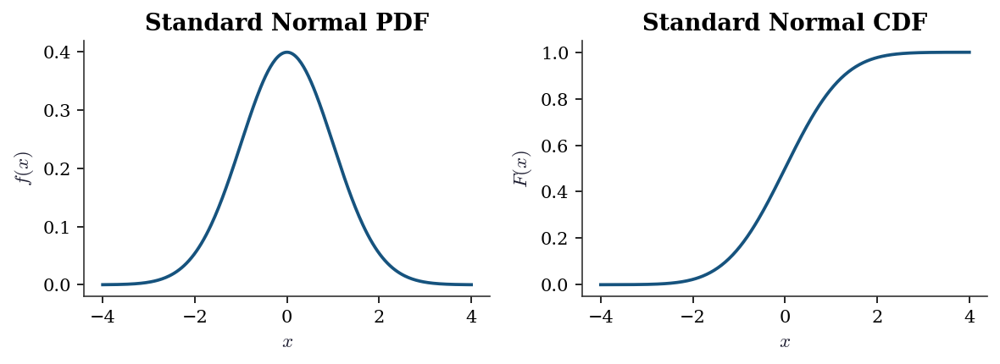
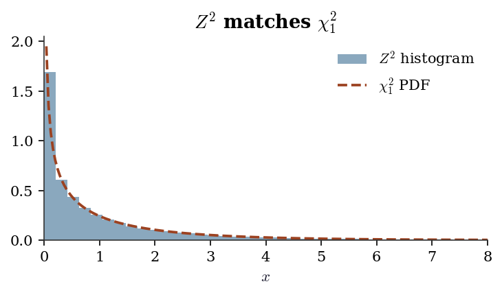
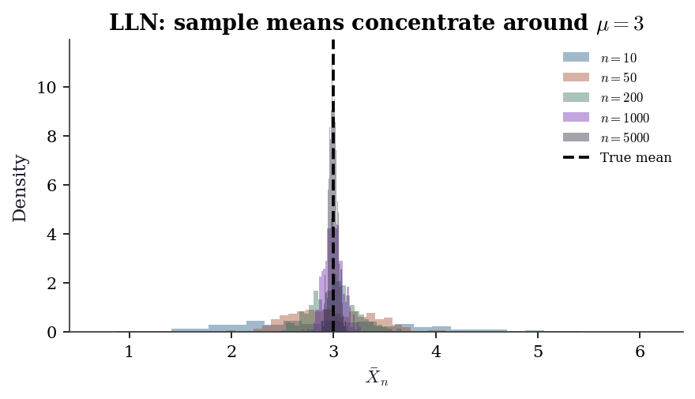
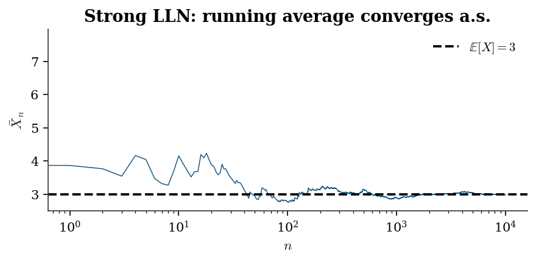
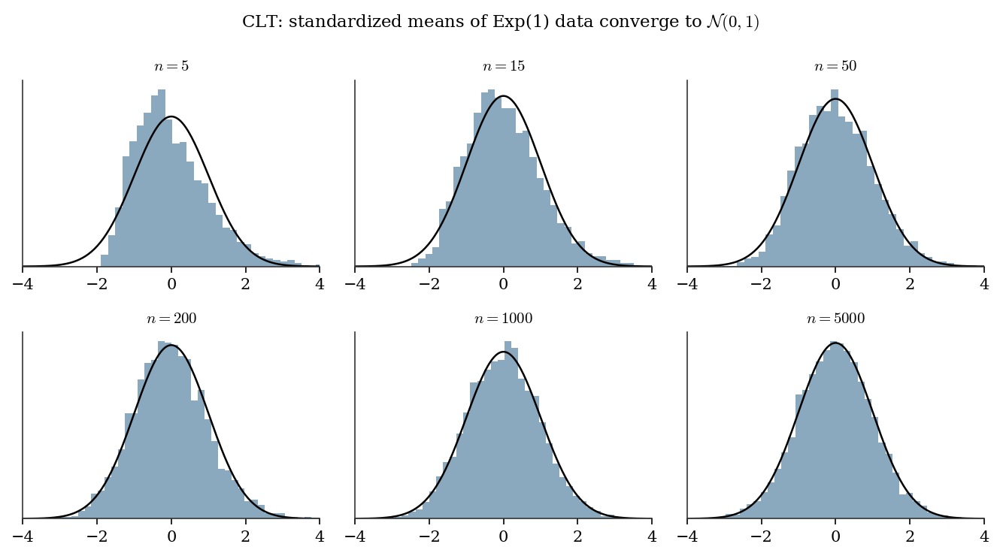
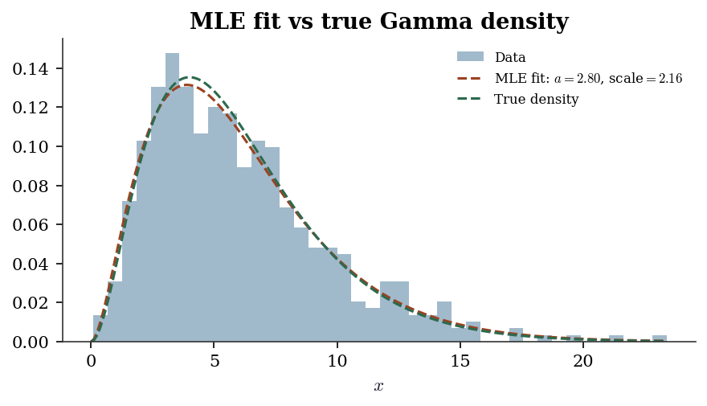
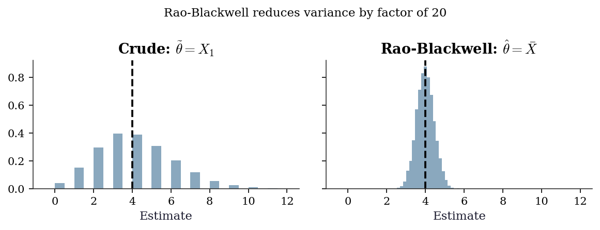
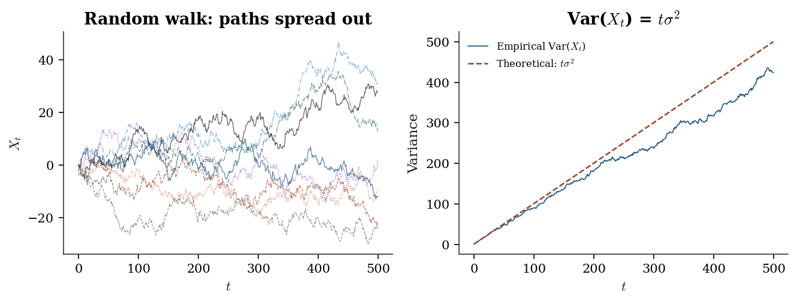

import numpy as np
from scipy import stats
import matplotlib.pyplot as plt
plt.style.use('assets/book.mplstyle')
rng = np.random.default_rng(42)Appendix A — Appendix A: Probability and Mathematical Statistics
This appendix collects the probability and mathematical statistics that the main chapters assume. It is a reference, not a course — substantive enough that a reader with rusty probability can refresh the machinery and follow along, but not a substitute for Casella and Berger or Rice. Every concept connects to code via scipy.stats and NumPy, because seeing a formula evaluated on real numbers cements intuition in a way that notation alone cannot.
Random Variables and Distributions
A random variable \(X\) is a function from a sample space to \(\mathbb{R}\). We work entirely at the non-measure-theoretic level: \(X\) either has a countable range (discrete) or a density (continuous). The book never needs more generality than this.
A.0.1 Discrete random variables
A discrete random variable takes values in a countable set. Its probability mass function (PMF) is \(p(x) = \Pr(X = x)\). The PMF is nonnegative and sums to one.
# Binomial(n=10, p=0.3) -- number of successes in 10 trials
X = stats.binom(n=10, p=0.3)
k = np.arange(0, 11)
print("k P(X=k)")
for ki in k:
print(f"{ki:2d} {X.pmf(ki):.4f}")k P(X=k)
0 0.0282
1 0.1211
2 0.2335
3 0.2668
4 0.2001
5 0.1029
6 0.0368
7 0.0090
8 0.0014
9 0.0001
10 0.0000A.0.2 Continuous random variables
A continuous random variable has a probability density function (PDF) \(f(x)\) satisfying \(\Pr(a \le X \le b) = \int_a^b f(x)\, dx\). The PDF can exceed 1 at a point — it is a density, not a probability.
The cumulative distribution function (CDF) is defined for both types: \[ F(x) = \Pr(X \le x). \] For continuous \(X\), \(F(x) = \int_{-\infty}^x f(t)\, dt\) and \(f(x) = F'(x)\). For discrete \(X\), \(F\) is a right-continuous step function.
x = np.linspace(-4, 4, 300)
rv = stats.norm(loc=0, scale=1)
fig, axes = plt.subplots(1, 2, figsize=(8, 3))
axes[0].plot(x, rv.pdf(x))
axes[0].set_title("Standard Normal PDF")
axes[0].set_xlabel("$x$")
axes[0].set_ylabel("$f(x)$")
axes[1].plot(x, rv.cdf(x))
axes[1].set_title("Standard Normal CDF")
axes[1].set_xlabel("$x$")
axes[1].set_ylabel("$F(x)$")
fig.tight_layout()
plt.show()
A.0.3 Expectation, variance, covariance
The expectation of \(g(X)\) is: \[ \mathbb{E}[g(X)] = \begin{cases} \sum_x g(x) p(x) & \text{(discrete)} \\ \int g(x) f(x)\, dx & \text{(continuous)}. \end{cases} \]
Key special cases:
- Mean: \(\mu = \mathbb{E}[X]\)
- Variance: \(\text{Var}(X) = \mathbb{E}[(X - \mu)^2] = \mathbb{E}[X^2] - \mu^2\)
- Covariance: \(\text{Cov}(X, Y) = \mathbb{E}[(X - \mu_X)(Y - \mu_Y)] = \mathbb{E}[XY] - \mu_X \mu_Y\)
- Correlation: \(\rho(X, Y) = \text{Cov}(X, Y) / (\sigma_X \sigma_Y)\)
Two properties used constantly throughout the book:
- Linearity of expectation: \(\mathbb{E}[aX + bY] = a\mathbb{E}[X] + b\mathbb{E}[Y]\), always — no independence required.
- Variance of a sum: \(\text{Var}(X + Y) = \text{Var}(X) + \text{Var}(Y) + 2\,\text{Cov}(X, Y)\). Under independence, the covariance term vanishes, giving \(\text{Var}(\bar{X}_n) = \sigma^2 / n\).
# Verify moments of Gamma(a=3, scale=2) numerically
rv = stats.gamma(a=3, scale=2)
sample = rv.rvs(size=100_000, random_state=rng)
print("Gamma(a=3, scale=2):")
print(f" Theoretical mean: {rv.mean():.4f}, "
f"sample mean: {sample.mean():.4f}")
print(f" Theoretical var: {rv.var():.4f}, "
f"sample var: {sample.var():.4f}")Gamma(a=3, scale=2):
Theoretical mean: 6.0000, sample mean: 6.0034
Theoretical var: 12.0000, sample var: 12.1211A.0.4 Joint, marginal, and conditional distributions
For a pair \((X, Y)\):
- Joint PDF / PMF: \(f(x, y)\) or \(p(x, y)\).
- Marginal: \(f_X(x) = \int f(x, y)\, dy\) (integrate out \(Y\)).
- Conditional: \(f(y \mid x) = f(x, y) / f_X(x)\), defined when \(f_X(x) > 0\).
- Independence: \(X \perp Y\) iff \(f(x, y) = f_X(x) f_Y(y)\).
These definitions extend to vectors: the joint density of \(\mathbf{X} = (X_1, \ldots, X_d)^\top\) factors as a product of marginals iff the components are mutually independent.
# Bivariate normal: sample and compute marginal/conditional
from scipy.stats import multivariate_normal
mu = np.array([1.0, 2.0])
Sigma = np.array([[1.0, 0.6],
[0.6, 1.0]])
joint = multivariate_normal(mean=mu, cov=Sigma)
samples = joint.rvs(size=5000, random_state=rng)
# Marginal of X1 is N(1, 1)
print(f"Marginal X1: mean={samples[:, 0].mean():.3f}, "
f"std={samples[:, 0].std():.3f}")
# Conditional E[X2 | X1=1.5] = mu2 + rho*(1.5 - mu1) = 2.3
rho = 0.6
cond_mean = mu[1] + rho * (1.5 - mu[0])
print(f"E[X2 | X1=1.5] = {cond_mean:.1f}")
# Verify: filter samples near X1=1.5
mask = np.abs(samples[:, 0] - 1.5) < 0.1
print(f"Sample mean of X2 | X1≈1.5: "
f"{samples[mask, 1].mean():.2f} "
f"(n={mask.sum()})")Marginal X1: mean=1.014, std=0.999
E[X2 | X1=1.5] = 2.3
Sample mean of X2 | X1≈1.5: 2.32 (n=367)Common Distribution Families
The distributions below recur throughout the book. For each, the table gives the scipy parameterization, key properties, and where in the book it appears most prominently.
A.0.5 Continuous distributions
| Distribution | scipy call | Mean | Variance | Key chapters |
|---|---|---|---|---|
| \(\mathcal{N}(\mu, \sigma^2)\) | norm(loc=mu, scale=sigma) |
\(\mu\) | \(\sigma^2\) | All |
| \(t_\nu\) | t(df=nu) |
0 (\(\nu>1\)) | \(\nu/(\nu-2)\) (\(\nu>2\)) | 10, 11, 15 |
| \(\chi^2_\nu\) | chi2(df=nu) |
\(\nu\) | \(2\nu\) | 10, 11 |
| \(F_{\nu_1, \nu_2}\) | f(dfn=nu1, dfd=nu2) |
\(\frac{\nu_2}{\nu_2-2}\) | see text | 10, 11, 19 |
| \(\text{Gamma}(a, s)\) | gamma(a, scale=s) |
\(as\) | \(as^2\) | 7, 10, 12 |
| \(\text{Beta}(a, b)\) | beta(a, b) |
\(\frac{a}{a+b}\) | \(\frac{ab}{(a+b)^2(a+b+1)}\) | 8, 12 |
| \(\text{Exp}(\lambda)\) | expon(scale=1/lam) |
\(1/\lambda\) | \(1/\lambda^2\) | 18 |
Parameterization warning. scipy’s expon(scale=s) uses scale \(s = 1/\lambda\), not the rate \(\lambda\) common in textbooks. Similarly, gamma(a, scale=s) uses the shape-scale parameterization, not shape-rate. Always check the scipy docstring when translating from a textbook formula.
The \(t\) distribution in practice. The \(t\) distribution arises whenever a normal mean is estimated with unknown variance. If \(Z \sim \mathcal{N}(0,1)\) and \(V \sim \chi^2_\nu\) independently, then \(T = Z/\sqrt{V/\nu} \sim t_\nu\). For \(\nu > 30\), \(t_\nu\) is nearly indistinguishable from \(\mathcal{N}(0,1)\), but at small \(\nu\) the heavier tails matter — this is why small-sample \(t\)-tests use \(t\) critical values rather than normal ones. At \(\nu = 1\), the \(t\) distribution is the Cauchy, which has no finite mean.
The chi-squared and \(F\) in testing. The \(\chi^2_\nu\) distribution is the distribution of the sum of \(\nu\) squared standard normals. It governs goodness-of-fit tests, likelihood ratio statistics, and Wald statistics. The \(F\) distribution, as the ratio of two independent scaled chi-squareds, governs \(F\)-tests in ANOVA and regression (Ch. 11). Both are special cases of the Gamma: \(\chi^2_\nu = \text{Gamma}(\nu/2, \text{scale}=2)\).
A.0.6 Discrete distributions
| Distribution | scipy call | Mean | Variance | Key chapters |
|---|---|---|---|---|
| \(\text{Binomial}(n, p)\) | binom(n, p) |
\(np\) | \(np(1-p)\) | 9, 12 |
| \(\text{Poisson}(\lambda)\) | poisson(mu=lam) |
\(\lambda\) | \(\lambda\) | 12, 13 |
Note on scipy’s Poisson. The parameter is mu, not lam or lambda. This follows scipy’s convention of naming the mean directly: poisson(mu=5).
A.0.7 Relationships between distributions
Several distributions are linked by transformations used constantly in hypothesis testing (Ch. 10):
- If \(Z \sim \mathcal{N}(0, 1)\), then \(Z^2 \sim \chi^2_1\).
- If \(Z_1, \ldots, Z_\nu \sim \mathcal{N}(0,1)\) iid, then \(\sum Z_i^2 \sim \chi^2_\nu\).
- If \(Z \sim \mathcal{N}(0,1)\) and \(V \sim \chi^2_\nu\) independent, then \(Z / \sqrt{V/\nu} \sim t_\nu\).
- If \(U \sim \chi^2_{\nu_1}\) and \(V \sim \chi^2_{\nu_2}\) independent, then \((U/\nu_1) / (V/\nu_2) \sim F_{\nu_1, \nu_2}\).
# Verify Z^2 ~ chi2(1) by simulation
Z = rng.standard_normal(50_000)
Z_sq = Z ** 2
fig, ax = plt.subplots(figsize=(5, 3))
x = np.linspace(0, 8, 200)
ax.hist(
Z_sq, bins=80, density=True,
alpha=0.5, label="$Z^2$ histogram"
)
ax.plot(x, stats.chi2(df=1).pdf(x), label="$\\chi^2_1$ PDF")
ax.set_xlim(0, 8)
ax.set_xlabel("$x$")
ax.legend()
ax.set_title("$Z^2$ matches $\\chi^2_1$")
fig.tight_layout()
plt.show()
Moment Generating Functions
The moment generating function (MGF) of \(X\) is \[ M_X(t) = \mathbb{E}[e^{tX}], \] defined for \(t\) in a neighborhood of zero. When it exists:
- \(M_X^{(k)}(0) = \mathbb{E}[X^k]\) (moments via differentiation).
- \(M_X\) uniquely determines the distribution of \(X\).
- If \(X_1, \ldots, X_n\) are independent, then \(M_{X_1 + \cdots + X_n}(t) = \prod_{i=1}^n M_{X_i}(t)\).
Why MGFs matter. Property 2 is the workhorse: to prove that a sum of independent normals is normal, show the MGF of the sum is the MGF of a normal. The CLT proof (next section) uses the same strategy with the closely related characteristic function \(\varphi_X(t) = \mathbb{E}[e^{itX}]\), which always exists (unlike the MGF, which may not exist for heavy-tailed distributions like the Cauchy).
| Distribution | MGF \(M_X(t)\) | Restriction |
|---|---|---|
| \(\mathcal{N}(\mu, \sigma^2)\) | \(\exp(\mu t + \sigma^2 t^2 / 2)\) | All \(t\) |
| \(\text{Gamma}(a, s)\) | \((1 - st)^{-a}\) | \(t < 1/s\) |
| \(\text{Poisson}(\lambda)\) | \(\exp(\lambda(e^t - 1))\) | All \(t\) |
| \(\text{Bernoulli}(p)\) | \(1 - p + pe^t\) | All \(t\) |
| Cauchy | Does not exist | — |
# Verify MGF of N(mu, sigma^2) at t=0.5 numerically
mu, sigma = 3.0, 2.0
t = 0.5
theoretical = np.exp(mu * t + sigma**2 * t**2 / 2)
sample = rng.normal(loc=mu, scale=sigma, size=200_000)
numerical = np.mean(np.exp(t * sample))
print(f"MGF at t={t}:")
print(f" Theoretical: {theoretical:.4f}")
print(f" MC estimate: {numerical:.4f}")MGF at t=0.5:
Theoretical: 7.3891
MC estimate: 7.3834Convergence Concepts
Three modes of convergence appear in the book. They differ in what exactly “converges” means, and the distinctions matter when a theorem gives you one mode but you need another.
A.0.8 Convergence in probability
\(X_n \xrightarrow{p} X\) means: for every \(\epsilon > 0\), \[ \Pr(|X_n - X| > \epsilon) \to 0 \quad \text{as } n \to \infty. \] Intuition: the probability of being far from \(X\) vanishes, but there is no claim about how quickly. This is the mode the law of large numbers delivers.
A.0.9 Convergence in distribution
\(X_n \xrightarrow{d} X\) means: \(F_n(x) \to F(x)\) at every continuity point \(x\) of \(F\). Equivalently: \(\mathbb{E}[g(X_n)] \to \mathbb{E}[g(X)]\) for every bounded continuous \(g\).
Intuition: the distribution shapes converge, but the random variables need not live on the same probability space. This is the mode the CLT delivers.
A.0.10 Almost sure convergence
\(X_n \xrightarrow{a.s.} X\) means: \(\Pr(\lim_{n \to \infty} X_n = X) = 1\). This is the strongest mode — it implies convergence in probability, which in turn implies convergence in distribution.
The hierarchy: \[ X_n \xrightarrow{a.s.} X \implies X_n \xrightarrow{p} X \implies X_n \xrightarrow{d} X. \] The converses are false in general.
A.0.11 A crucial non-implication
Convergence in distribution does NOT imply convergence of expectations. The classic counterexample uses the Cauchy distribution, which has no finite mean. Consider \(X_n \sim t_n\) (Student’s \(t\) with \(n\) degrees of freedom). As \(n \to \infty\), \(X_n \xrightarrow{d} \mathcal{N}(0, 1)\), so \(\mathbb{E}[X_n^2] = n/(n-2) \to 1 = \text{Var}(Z)\) — that works fine. But consider \(Y_n = n \cdot \mathbf{1}(|X_n| > n^{1/2})\). Then \(Y_n \xrightarrow{d} 0\) but \(\mathbb{E}[Y_n]\) does not converge to 0. The point: convergence in distribution controls the shape of the distribution, not the tails.
A sufficient condition for \(\mathbb{E}[X_n] \to \mathbb{E}[X]\) is uniform integrability — the tails of \(\{X_n\}\) must be uniformly controlled. When you see a theorem in the main chapters that says “\(\hat{\theta}_n\) is asymptotically normal,” the CLT gives convergence in distribution of the standardized statistic. To also conclude that moments converge (e.g., that the MSE of \(\hat{\theta}_n\) converges to zero), you need uniform integrability or a separate argument.
A.0.12 Slutsky’s theorem
A companion result used repeatedly alongside the CLT:
If \(X_n \xrightarrow{d} X\) and \(Y_n \xrightarrow{p} c\) (a constant), then:
- \(X_n + Y_n \xrightarrow{d} X + c\)
- \(Y_n X_n \xrightarrow{d} cX\)
- \(X_n / Y_n \xrightarrow{d} X / c\) (when \(c \ne 0\))
Why this matters. The CLT gives you \(\sqrt{n}(\bar{X}_n - \mu)/\sigma \xrightarrow{d} \mathcal{N}(0,1)\), but \(\sigma\) is unknown. Replacing it with \(\hat{\sigma}_n \xrightarrow{p} \sigma\) and applying Slutsky gives \(\sqrt{n}(\bar{X}_n - \mu)/\hat{\sigma}_n \xrightarrow{d} \mathcal{N}(0,1)\). This is the theoretical justification for using estimated standard errors in confidence intervals and \(t\)-tests. The delta method proof also relies on Slutsky.
# Demonstrate convergence in probability: LLN
sample_sizes = [10, 50, 200, 1000, 5000]
true_mean = 3.0
rv = stats.expon(scale=true_mean)
fig, ax = plt.subplots(figsize=(6, 3.5))
for n in sample_sizes:
# 500 replications of the sample mean
means = np.array([
rv.rvs(size=n, random_state=rng).mean()
for _ in range(500)
])
ax.hist(
means, bins=30, density=True, alpha=0.4,
label=f"$n={n}$"
)
ax.axvline(true_mean, color='k', linestyle='--',
label="True mean")
ax.set_xlabel("$\\bar{X}_n$")
ax.set_ylabel("Density")
ax.legend(fontsize=8)
ax.set_title(
"LLN: sample means concentrate "
"around $\\mu=3$"
)
fig.tight_layout()
plt.show()
Law of Large Numbers
Theorem (Strong LLN). If \(X_1, X_2, \ldots\) are iid with \(\mathbb{E}[|X_1|] < \infty\), then \[ \bar{X}_n = \frac{1}{n}\sum_{i=1}^n X_i \xrightarrow{a.s.} \mathbb{E}[X_1]. \]
Why it matters. The LLN is the theoretical license for Monte Carlo. Every time Ch. 7 replaces an integral \(\mathbb{E}[h(X)]\) with a sample average \(\frac{1}{n}\sum h(X_i)\), that replacement is justified by the LLN. Every time Ch. 9 estimates a bootstrap distribution by resampling \(B\) times, the LLN guarantees that the empirical distribution converges to the bootstrap distribution.
The Weak LLN requires only \(\text{Var}(X_1) < \infty\) and delivers convergence in probability. The Strong LLN requires only \(\mathbb{E}[|X_1|] < \infty\) and delivers almost sure convergence. The strong version is what justifies path-by-path Monte Carlo: for almost every sequence of random draws, the running average converges to the right answer.
# Running average converges path-by-path
X = rng.exponential(scale=3.0, size=10_000)
running_avg = np.cumsum(X) / np.arange(1, len(X) + 1)
fig, ax = plt.subplots(figsize=(6, 3))
ax.plot(running_avg, linewidth=0.7)
ax.axhline(3.0, color='k', linestyle='--',
label="$\\mathbb{E}[X] = 3$")
ax.set_xlabel("$n$")
ax.set_ylabel("$\\bar{X}_n$")
ax.set_xscale('log')
ax.legend()
ax.set_title("Strong LLN: running average "
"converges a.s.")
fig.tight_layout()
plt.show()
Central Limit Theorem
Theorem (CLT). If \(X_1, X_2, \ldots\) are iid with mean \(\mu\) and finite variance \(\sigma^2 > 0\), then \[ \sqrt{n}\,\frac{\bar{X}_n - \mu}{\sigma} \xrightarrow{d} \mathcal{N}(0, 1). \tag{A.1}\]
Proof sketch (via characteristic functions). The characteristic function of \(Z_n = \sqrt{n}(\bar{X}_n - \mu)/\sigma\) can be written as \(\varphi_{Z_n}(t) = [\varphi_{(X_1 - \mu)/\sigma}(t/\sqrt{n})]^n\). Expand \(\varphi_{(X_1 - \mu)/\sigma}\) in a Taylor series around \(0\): \(\varphi(s) = 1 - s^2/2 + o(s^2)\). Substituting \(s = t/\sqrt{n}\) and taking the \(n\)-th power gives \([1 - t^2/(2n) + o(1/n)]^n \to e^{-t^2/2}\), which is the characteristic function of \(\mathcal{N}(0, 1)\). Lévy’s continuity theorem converts pointwise convergence of characteristic functions to convergence in distribution.
Why \(\sqrt{n}\) matters. The CLT rate \(1/\sqrt{n}\) is the fundamental speed limit of estimation from iid data. All standard errors in the book scale as \(O(1/\sqrt{n})\): the standard error of a regression coefficient (Ch. 11), of a maximum likelihood estimate (Ch. 10), of a Monte Carlo average (Ch. 7), of a treatment effect estimator (Ch. 21). When you see \(\sqrt{n}\) in a denominator, you are looking at the CLT at work.
The Berry-Esseen bound quantifies the approximation error: \[ \sup_x \left| \Pr\left(\frac{\bar{X}_n - \mu}{\sigma/\sqrt{n}} \le x \right) - \Phi(x) \right| \le \frac{C \rho}{\sigma^3 \sqrt{n}}, \] where \(\rho = \mathbb{E}[|X - \mu|^3]\) and \(C \le 0.4748\). The bound scales as \(1/\sqrt{n}\) and depends on skewness (via \(\rho\)): the more skewed the population, the slower the normal approximation kicks in. This is why bootstrap \(t\) intervals (Ch. 9) outperform normal-based intervals for skewed data at moderate sample sizes.
# CLT in action: exponential data (skewed)
fig, axes = plt.subplots(2, 3, figsize=(9, 5))
true_mean = 1.0
true_var = 1.0 # Exp(1): mean=1, var=1
sample_sizes = [5, 15, 50, 200, 1000, 5000]
for ax, n in zip(axes.flat, sample_sizes):
# 5000 replications of the standardized mean
z_vals = np.array([
np.sqrt(n) * (
rng.exponential(scale=1.0, size=n).mean()
- true_mean
) / np.sqrt(true_var)
for _ in range(5000)
])
ax.hist(z_vals, bins=40, density=True, alpha=0.5)
x_grid = np.linspace(-4, 4, 200)
ax.plot(
x_grid, stats.norm.pdf(x_grid),
'k-', linewidth=1.2
)
ax.set_title(f"$n = {n}$", fontsize=10)
ax.set_xlim(-4, 4)
ax.set_yticks([])
fig.suptitle(
"CLT: standardized means of Exp(1) data "
"converge to $\\mathcal{N}(0,1)$",
fontsize=11
)
fig.tight_layout()
plt.show()
The Delta Method
The delta method translates CLT-type results through smooth transformations. It is used in Ch. 10 (confidence intervals for transformed parameters), Ch. 12 (variance of marginal effects in GLMs), Ch. 13 (marginal effects in discrete-choice models), Ch. 18 (survival function from cumulative hazard), and Ch. 21 (variance of causal estimators).
Theorem (Univariate delta method). If \(\sqrt{n}(T_n - \theta) \xrightarrow{d} \mathcal{N}(0, \sigma^2)\) and \(g\) is differentiable at \(\theta\) with \(g'(\theta) \ne 0\), then \[ \sqrt{n}(g(T_n) - g(\theta)) \xrightarrow{d} \mathcal{N}(0, [g'(\theta)]^2 \sigma^2). \tag{A.2}\]
Proof sketch. Taylor-expand \(g(T_n)\) around \(\theta\): \(g(T_n) = g(\theta) + g'(\theta)(T_n - \theta) + o_p(|T_n - \theta|)\). Since \(T_n \xrightarrow{p} \theta\), the remainder is \(o_p(1/\sqrt{n})\). Multiply by \(\sqrt{n}\): \(\sqrt{n}(g(T_n) - g(\theta)) = g'(\theta) \cdot \sqrt{n}(T_n - \theta) + o_p(1)\). Apply Slutsky’s theorem to get the result.
Multivariate version. If \(\sqrt{n}(\mathbf{T}_n - \boldsymbol{\theta}) \xrightarrow{d} \mathcal{N}(\mathbf{0}, \boldsymbol{\Sigma})\) and \(g: \mathbb{R}^p \to \mathbb{R}\) is differentiable at \(\boldsymbol{\theta}\), then \[ \sqrt{n}(g(\mathbf{T}_n) - g(\boldsymbol{\theta})) \xrightarrow{d} \mathcal{N}\!\left(0,\; \nabla g(\boldsymbol{\theta})^\top \boldsymbol{\Sigma}\, \nabla g(\boldsymbol{\theta})\right). \]
A.0.13 Worked example: variance of \(\log(\bar{X})\)
Suppose \(X_1, \ldots, X_n\) are iid with \(\mathbb{E}[X_1] = \mu > 0\) and \(\text{Var}(X_1) = \sigma^2\). What is the asymptotic variance of \(\log(\bar{X}_n)\)?
By the CLT, \(\sqrt{n}(\bar{X}_n - \mu) \xrightarrow{d} \mathcal{N}(0, \sigma^2)\). Take \(g(x) = \log(x)\), so \(g'(x) = 1/x\). By the delta method: \[ \sqrt{n}(\log \bar{X}_n - \log \mu) \xrightarrow{d} \mathcal{N}\!\left(0,\, \frac{\sigma^2}{\mu^2}\right). \] The asymptotic variance of \(\log \bar{X}_n\) is \(\sigma^2 / (n \mu^2)\).
# Verify delta method: Var(log(X_bar)) for Exp(mu)
mu = 3.0
sigma2 = mu**2 # Var(Exp(mu)) = mu^2
n = 200
n_reps = 20_000
# Simulate log(X_bar) many times
log_xbar = np.array([
np.log(rng.exponential(scale=mu, size=n).mean())
for _ in range(n_reps)
])
# Delta method prediction: Var = sigma^2 / (n * mu^2)
predicted_var = sigma2 / (n * mu**2)
observed_var = log_xbar.var()
print(f"Delta method predicted Var(log(X_bar)):"
f" {predicted_var:.6f}")
print(f"Simulated Var(log(X_bar)): "
f" {observed_var:.6f}")
print(f"Ratio (should be ≈ 1): "
f" {observed_var / predicted_var:.3f}")Delta method predicted Var(log(X_bar)): 0.005000
Simulated Var(log(X_bar)): 0.004892
Ratio (should be ≈ 1): 0.978Maximum Likelihood Estimation
Maximum likelihood is the inferential backbone of most models in this book: GLMs (Ch. 12), discrete choice (Ch. 13), mixed effects (Ch. 14), ARIMA (Ch. 15), state-space models (Ch. 16), Cox regression (Ch. 18). Ch. 10 develops the asymptotic theory in full; here we give the definitions and a from-scratch example.
A.0.14 Setup
Given iid observations \(X_1, \ldots, X_n\) from a density \(f(x; \theta)\), the likelihood is \[ L(\theta) = \prod_{i=1}^n f(X_i; \theta), \] and the log-likelihood is \[ \ell(\theta) = \sum_{i=1}^n \log f(X_i; \theta). \] The maximum likelihood estimator (MLE) is \(\hat{\theta}_n = \arg\max_\theta \ell(\theta)\).
A.0.15 Score function and Fisher information
The score function is the gradient of the log-likelihood: \[ S(\theta) = \nabla_\theta \ell(\theta) = \sum_{i=1}^n \nabla_\theta \log f(X_i; \theta). \]
Under regularity conditions (interchangeability of differentiation and integration):
- \(\mathbb{E}[S(\theta_0)] = \mathbf{0}\) — the score has mean zero at the true parameter.
- The Fisher information is \(\mathcal{I}(\theta) = \text{Var}(S(\theta)) = \mathbb{E}[S(\theta) S(\theta)^\top]\).
- The information matrix equality: \(\mathcal{I}(\theta) = -\mathbb{E}[\nabla^2_\theta \ell(\theta)]\). This says the curvature of the log-likelihood equals the variance of the score — a fact used to construct the observed information \(\hat{\mathcal{I}} = -\nabla^2 \ell(\hat{\theta})\) as an estimator of \(\mathcal{I}\).
A.0.16 Asymptotic normality
Under standard regularity conditions (see Ch. 10 for the precise statement): \[ \sqrt{n}(\hat{\theta}_n - \theta_0) \xrightarrow{d} \mathcal{N}\!\left(\mathbf{0},\; \mathcal{I}_1(\theta_0)^{-1}\right), \] where \(\mathcal{I}_1(\theta_0)\) is the Fisher information for a single observation. The MLE is consistent, asymptotically normal, and asymptotically efficient (achieves the Cramér-Rao bound).
A.0.17 Cramér-Rao lower bound
For any unbiased estimator \(T\) of \(\theta\): \[ \text{Var}(T) \ge \frac{1}{n \mathcal{I}_1(\theta)}. \] No unbiased estimator can have smaller variance. The MLE achieves this bound asymptotically — this is what “efficient” means in the likelihood context.
Observed vs expected information. In practice, the Fisher information \(\mathcal{I}(\theta)\) (the expected information) is replaced by the observed information \(\hat{\mathcal{I}} = -\nabla^2 \ell(\hat{\theta})\), which does not require computing an expectation. Under standard conditions, these converge to the same limit. Efron and Hinkley (1978) showed that the observed information is preferable in many settings because it conditions on the observed data. Ch. 10 develops this distinction in detail.
What “regularity conditions” means. The MLE results above hold under conditions that roughly require: (1) the parameter space is an open set, (2) the support of \(f(x; \theta)\) does not depend on \(\theta\), (3) \(f\) is thrice differentiable in \(\theta\), and (4) the Fisher information is positive definite. These are Cramér’s conditions. The most commonly violated condition in practice is (2): the uniform distribution \(\text{Uniform}(0, \theta)\) has support depending on \(\theta\), so the standard MLE theory does not apply — and indeed, the MLE converges at rate \(1/n\) rather than \(1/\sqrt{n}\).
A.0.18 From-scratch MLE: fitting a Gamma distribution
# Generate Gamma(a=3, scale=2) data
true_a, true_scale = 3.0, 2.0
data = stats.gamma.rvs(
a=true_a, scale=true_scale,
size=500, random_state=rng
)
# From-scratch MLE using scipy.optimize
from scipy.optimize import minimize
from scipy.special import gammaln, digamma
def neg_loglik(params, data):
"""Negative log-likelihood for Gamma(a, scale)."""
a, scale = params
if a <= 0 or scale <= 0:
return np.inf
n = len(data)
return (
-n * a * np.log(1 / scale)
+ n * gammaln(a)
- (a - 1) * np.sum(np.log(data))
+ np.sum(data) / scale
)
def neg_loglik_grad(params, data):
"""Gradient of negative log-likelihood."""
a, scale = params
n = len(data)
da = (
-n * np.log(1 / scale)
+ n * digamma(a)
- np.sum(np.log(data))
)
dscale = (
n * a / scale
- np.sum(data) / scale**2
)
return np.array([da, dscale])
result = minimize(
fun=neg_loglik,
x0=np.array([1.0, 1.0]),
args=(data,),
jac=neg_loglik_grad,
method='L-BFGS-B',
bounds=[(1e-6, None), (1e-6, None)],
)
a_hat, scale_hat = result.x
print(f"From-scratch MLE: a={a_hat:.3f}, "
f"scale={scale_hat:.3f}")
# Compare to scipy.stats.gamma.fit
a_scipy, loc_scipy, scale_scipy = stats.gamma.fit(
data, floc=0 # fix loc=0 for standard Gamma
)
print(f"scipy.stats.fit: a={a_scipy:.3f}, "
f"scale={scale_scipy:.3f}")
print(f"True values: a={true_a:.1f}, "
f"scale={true_scale:.1f}")From-scratch MLE: a=2.800, scale=2.161
scipy.stats.fit: a=2.800, scale=2.161
True values: a=3.0, scale=2.0# Overlay fitted density on histogram
x_grid = np.linspace(0, data.max(), 200)
fig, ax = plt.subplots(figsize=(6, 3.5))
ax.hist(data, bins=40, density=True, alpha=0.4,
label="Data")
ax.plot(
x_grid,
stats.gamma.pdf(
x_grid, a=a_hat, scale=scale_hat
),
label=(f"MLE fit: $a={a_hat:.2f}$, "
f"scale$={scale_hat:.2f}$"),
linewidth=1.5,
)
ax.plot(
x_grid,
stats.gamma.pdf(
x_grid, a=true_a, scale=true_scale
),
'--', label="True density", linewidth=1.5,
)
ax.set_xlabel("$x$")
ax.legend(fontsize=8)
ax.set_title("MLE fit vs true Gamma density")
fig.tight_layout()
plt.show()
Exponential Families
Most parametric models in the book belong to the exponential family. This structure drives the theory of GLMs (Ch. 12), links to sufficient statistics, and explains why IRLS works.
A.0.19 Canonical form
A family of distributions is an exponential family in canonical form if the density can be written as: \[ f(x; \theta, \phi) = \exp\!\left\{ \frac{x\theta - b(\theta)}{\phi} + c(x, \phi) \right\}, \tag{A.3}\] where \(\theta\) is the natural parameter, \(b(\theta)\) is the cumulant function (also called the log-partition function), \(\phi\) is the dispersion parameter, and \(c(x, \phi)\) collects everything that does not depend on \(\theta\).
The key property: all the distributional information about \(\theta\) is captured by: \[ \mathbb{E}[X] = b'(\theta), \qquad \text{Var}(X) = \phi \, b''(\theta). \tag{A.4}\]
The mean is a function of \(\theta\) alone; the variance factors into a dispersion term and a variance function \(V(\mu) = b''(\theta(\mu))\) that depends on the mean. This factoring is the foundation of GLM theory in Ch. 12.
A.0.20 Canonical table
| Distribution | \(\theta\) | \(b(\theta)\) | \(\phi\) | \(V(\mu) = b''(\theta)\) |
|---|---|---|---|---|
| \(\mathcal{N}(\mu, \sigma^2)\) | \(\mu\) | \(\theta^2/2\) | \(\sigma^2\) | 1 |
| \(\text{Poisson}(\mu)\) | \(\log \mu\) | \(e^\theta\) | 1 | \(\mu\) |
| \(\text{Binomial}(m, p)\) | \(\log\frac{p}{1-p}\) | \(m\log(1+e^\theta)\) | 1 | \(\mu(1-\mu/m)\) |
| \(\text{Gamma}(\mu, \nu)\) | \(-1/\mu\) | \(-\log(-\theta)\) | \(1/\nu\) | \(\mu^2\) |
| \(\text{Exp}(\mu)\) | \(-1/\mu\) | \(-\log(-\theta)\) | 1 | \(\mu^2\) |
# Verify E[X] = b'(theta) for Poisson
# b(theta) = exp(theta), so b'(theta) = exp(theta) = mu
lam = 5.0 # Poisson rate
theta = np.log(lam) # natural parameter
b_prime = np.exp(theta)
sample = stats.poisson.rvs(mu=lam, size=100_000,
random_state=rng)
print(f"Poisson(lambda={lam}):")
print(f" b'(theta) = exp(theta) = {b_prime:.1f}")
print(f" Sample mean = {sample.mean():.3f}")
# Verify Var(X) = phi * b''(theta) = 1 * exp(theta) = mu
b_double_prime = np.exp(theta)
print(f" phi * b''(theta) = {b_double_prime:.1f}")
print(f" Sample var = {sample.var():.3f}")Poisson(lambda=5.0):
b'(theta) = exp(theta) = 5.0
Sample mean = 5.003
phi * b''(theta) = 5.0
Sample var = 5.022A.0.21 Why exponential families matter for the book
- Sufficient statistics. The exponential family is the only family with finite-dimensional sufficient statistics (by the Pitman-Koopman-Darmois theorem). This is why MLE reduces to solving a finite system of equations.
- GLMs. Every GLM (Ch. 12) specifies a response distribution from the exponential family and a link function connecting \(\mathbb{E}[Y_i]\) to the linear predictor \(\mathbf{x}_i^\top \boldsymbol{\beta}\). The canonical link sets \(\theta_i = \mathbf{x}_i^\top \boldsymbol{\beta}\), giving the log-likelihood a concave, well-behaved form.
- IRLS convergence. Fisher scoring for GLMs with canonical links is equivalent to IRLS, and the concavity of the log-likelihood guarantees convergence — no step-size tuning needed.
- Natural conjugacy. For Bayesian analysis (Ch. 8), exponential families admit conjugate priors of the same exponential form. The posterior update becomes a simple parameter update rather than a general integration problem. This is why Gibbs sampling for exponential-family models is straightforward: the full conditionals have closed forms.
Conditional Expectation and the Tower Property
The conditional expectation \(\mathbb{E}[Y \mid X]\) is the function of \(X\) that best predicts \(Y\) in the mean-squared-error sense: \[ \mathbb{E}[Y \mid X] = \arg\min_{g(X)} \mathbb{E}[(Y - g(X))^2]. \]
The most important property of conditional expectation for this book is the tower property (law of iterated expectations): \[ \mathbb{E}\!\left[\mathbb{E}[Y \mid X]\right] = \mathbb{E}[Y]. \tag{A.5}\]
Why this matters for causal inference. In Ch. 21, the average treatment effect is \(\text{ATE} = \mathbb{E}[Y(1) - Y(0)]\). Under unconfoundedness, \(\mathbb{E}[Y(1) \mid X] = \mathbb{E}[Y \mid T=1, X]\). The tower property turns this into a marginal statement: \[ \mathbb{E}[Y(1)] = \mathbb{E}\!\left[\mathbb{E}[Y \mid T=1, X]\right], \] which is estimable from observed data. Without the tower property, the bridge from conditional identification to marginal estimation collapses.
The conditional variance formula is a close relative: \[ \text{Var}(Y) = \mathbb{E}[\text{Var}(Y \mid X)] + \text{Var}(\mathbb{E}[Y \mid X]). \] This decomposes total variance into the average within-group variance and the between-group variance — a partition used in ANOVA, mixed-effects models (Ch. 14), and variance reduction (Ch. 7).
Iterated expectations in regression. For the linear regression model \(Y = \mathbf{x}^\top \boldsymbol{\beta} + \varepsilon\) with \(\mathbb{E}[\varepsilon \mid \mathbf{X}] = 0\), the tower property gives \(\mathbb{E}[Y] = \mathbb{E}[\mathbf{x}^\top \boldsymbol{\beta}]\). More importantly, the conditional-mean restriction \(\mathbb{E}[Y \mid \mathbf{X}] = \mathbf{X}\boldsymbol{\beta}\) is what makes OLS identify the population regression function. When this condition fails (endogeneity, omitted variables), Ch. 11 and Ch. 20 develop the consequences and remedies.
# Simulation: E[E[Y|X]] = E[Y]
# Generate (X, Y) where Y|X ~ N(2X, 1)
n = 50_000
X = rng.uniform(0, 5, size=n)
Y = 2 * X + rng.standard_normal(n)
# E[Y] by direct average
EY_direct = Y.mean()
# E[Y] via tower: compute E[Y|X] in bins, then average
n_bins = 50
bins = np.linspace(0, 5, n_bins + 1)
conditional_means = np.zeros(n_bins)
bin_counts = np.zeros(n_bins)
for j in range(n_bins):
mask = (X >= bins[j]) & (X < bins[j + 1])
if mask.sum() > 0:
conditional_means[j] = Y[mask].mean()
bin_counts[j] = mask.sum()
# Weighted average of conditional means
EY_tower = np.average(
conditional_means,
weights=bin_counts
)
print(f"E[Y] direct: {EY_direct:.4f}")
print(f"E[E[Y|X]] via binning: {EY_tower:.4f}")
print(f"Theoretical E[Y]=E[2X]: {2 * 2.5:.1f}")E[Y] direct: 5.0046
E[E[Y|X]] via binning: 5.0046
Theoretical E[Y]=E[2X]: 5.0Sufficient Statistics and Rao-Blackwell
A.0.22 Sufficient statistics
A statistic \(T(\mathbf{X})\) is sufficient for \(\theta\) if the conditional distribution of \(\mathbf{X}\) given \(T(\mathbf{X})\) does not depend on \(\theta\). Informally: \(T\) captures everything in the data that is relevant for inference about \(\theta\).
Factorization theorem (Neyman). \(T(\mathbf{X})\) is sufficient for \(\theta\) iff the joint density factors as \[ f(\mathbf{x}; \theta) = g(T(\mathbf{x}), \theta) \cdot h(\mathbf{x}), \] where \(h\) does not depend on \(\theta\). The exponential family (Equation A.3) makes sufficiency immediate: the sufficient statistic is whatever multiplies \(\theta\) inside the exponent.
Examples:
- For \(X_1, \ldots, X_n \sim \mathcal{N}(\mu, \sigma^2)\) with \(\sigma^2\) known: \(T = \sum X_i\) (or equivalently \(\bar{X}\)) is sufficient for \(\mu\).
- For \(X_1, \ldots, X_n \sim \text{Poisson}(\lambda)\): \(T = \sum X_i\) is sufficient for \(\lambda\).
- For \(X_1, \ldots, X_n \sim \mathcal{N}(\mu, \sigma^2)\) with both unknown: \(T = (\sum X_i, \sum X_i^2)\) is jointly sufficient for \((\mu, \sigma^2)\).
A.0.23 Rao-Blackwell theorem
Theorem. If \(T\) is sufficient for \(\theta\) and \(\tilde{\theta}\) is any unbiased estimator of \(\theta\), define \(\hat{\theta} = \mathbb{E}[\tilde{\theta} \mid T]\). Then:
- \(\hat{\theta}\) is unbiased.
- \(\text{Var}(\hat{\theta}) \le \text{Var}(\tilde{\theta})\), with equality iff \(\tilde{\theta}\) is already a function of \(T\).
Intuition. Conditioning on a sufficient statistic averages out the irrelevant noise while preserving all the information about \(\theta\). The result can only be less variable.
Connection to variance reduction (Ch. 7). Rao-Blackwellization in Monte Carlo is exactly this theorem applied to simulation: if you can compute \(\mathbb{E}[h(X) \mid T]\) analytically for some sufficient (or near-sufficient) statistic \(T\), the conditional estimator has lower variance than the raw sample average. Ch. 7 uses this principle for variance reduction in importance sampling and Gibbs sampling.
# Rao-Blackwell for Poisson rate estimation
# Crude estimator: theta_tilde = X_1 (first observation)
# Sufficient statistic: T = sum(X_i)
# RB estimator: E[X_1 | T] = T/n = X_bar
lam_true = 4.0
n = 20
n_reps = 10_000
crude_estimates = np.zeros(n_reps)
rb_estimates = np.zeros(n_reps)
for rep in range(n_reps):
sample = rng.poisson(lam=lam_true, size=n)
crude_estimates[rep] = sample[0] # just X_1
rb_estimates[rep] = sample.mean() # X_bar = T/n
print(f"Estimating lambda = {lam_true}:")
print(f" Crude (X_1): mean={crude_estimates.mean():.3f}"
f" var={crude_estimates.var():.3f}")
print(f" RB (X_bar): mean={rb_estimates.mean():.3f}"
f" var={rb_estimates.var():.3f}")
print(f" Variance ratio: "
f"{crude_estimates.var() / rb_estimates.var():.1f}x")
print(f" (Expected ratio: n = {n})")Estimating lambda = 4.0:
Crude (X_1): mean=3.958 var=3.999
RB (X_bar): mean=3.997 var=0.201
Variance ratio: 19.9x
(Expected ratio: n = 20)fig, axes = plt.subplots(1, 2, figsize=(8, 3),
sharex=True, sharey=True)
bins = np.arange(-0.5, 12.5, 0.5)
axes[0].hist(
crude_estimates, bins=bins,
density=True, alpha=0.5
)
axes[0].axvline(lam_true, color='k', linestyle='--')
axes[0].set_title("Crude: $\\tilde{\\theta} = X_1$")
axes[0].set_xlabel("Estimate")
axes[1].hist(
rb_estimates, bins=np.linspace(1, 7, 40),
density=True, alpha=0.5
)
axes[1].axvline(lam_true, color='k', linestyle='--')
axes[1].set_title(
"Rao-Blackwell: $\\hat{\\theta} = \\bar{X}$"
)
axes[1].set_xlabel("Estimate")
fig.suptitle(
"Rao-Blackwell reduces variance by "
f"factor of {n}",
fontsize=11
)
fig.tight_layout()
plt.show()
The sections above cover standard undergraduate probability and statistics. The sections below introduce advanced concepts that appear in specific chapters of this book. A reader who has taken a one-semester mathematical statistics course will likely recognize the names but may not have internalized the mechanics. Each section states the result, gives intuition, and points to the chapter(s) that use it.
Jensen’s Inequality
Theorem. If \(g\) is convex and \(\mathbb{E}[|X|] < \infty\), then \[ \mathbb{E}[g(X)] \ge g(\mathbb{E}[X]). \tag{A.6}\] If \(g\) is strictly convex, equality holds only when \(X\) is constant (degenerate).
Proof sketch. A convex function lies above every tangent line. At the point \(\mu = \mathbb{E}[X]\), there exists a supporting hyperplane \(g(x) \ge g(\mu) + \lambda(x - \mu)\) for some slope \(\lambda\) (a subgradient). Taking expectations of both sides: \(\mathbb{E}[g(X)] \ge g(\mu) + \lambda(\mathbb{E}[X] - \mu) = g(\mu) = g(\mathbb{E}[X])\).
Intuition. Averaging first and then applying a curved function is not the same as applying the curve first and then averaging. The curvature of \(g\) creates a systematic gap. The classic trap is \(\mathbb{E}[1/X] \ne 1/\mathbb{E}[X]\): since \(g(x) = 1/x\) is convex on \((0, \infty)\), Jensen gives \(\mathbb{E}[1/X] \ge 1/\mathbb{E}[X]\).
Where this appears. In Ch. 14, marginal coefficients in a logistic GLMM differ from conditional coefficients precisely because of Jensen’s inequality. The logistic link is nonlinear, so averaging predicted probabilities across random effects is not the same as predicting at the average random effect. The gap is not a bug — it is Jensen at work.
Kullback-Leibler Divergence
The Kullback-Leibler (KL) divergence from distribution \(p\) to distribution \(q\) is: \[ D_{\text{KL}}(p \| q) = \mathbb{E}_p\!\left[\log \frac{p(X)}{q(X)}\right] = \int p(x) \log \frac{p(x)}{q(x)}\, dx. \tag{A.7}\]
Key properties:
- \(D_{\text{KL}}(p \| q) \ge 0\) (Gibbs’ inequality), with equality iff \(p = q\) almost everywhere.
- \(D_{\text{KL}}\) is not symmetric: \(D_{\text{KL}}(p \| q) \ne D_{\text{KL}}(q \| p)\) in general. It is not a distance.
- \(D_{\text{KL}}\) is not defined when \(q(x) = 0\) at any point where \(p(x) > 0\).
Connection to likelihood. Maximizing the log-likelihood \(\sum \log q(x_i; \theta)\) over a model family \(q(\cdot; \theta)\) is equivalent to minimizing the KL divergence from the true data distribution \(p\) to \(q\). Write \(D_{\text{KL}}(p \| q_\theta) = \mathbb{E}_p[\log p(X)] - \mathbb{E}_p[\log q(X; \theta)]\). The first term does not depend on \(\theta\), so minimizing \(D_{\text{KL}}\) is the same as maximizing \(\mathbb{E}_p[\log q(X; \theta)]\), which the LLN approximates by the sample average \(\frac{1}{n}\sum \log q(X_i; \theta)\). This is why MLE finds the model closest to truth in the KL sense.
Where this appears. In Ch. 10, the Akaike Information Criterion (AIC) is derived as an approximately unbiased estimator of the expected KL divergence from truth to the fitted model. The penalty \(2k\) in \(\text{AIC} = -2\ell(\hat{\theta}) + 2k\) corrects for the optimism of evaluating fit on the same data used for estimation.
# KL divergence between two normals: closed form
# KL(N(mu1,s1^2) || N(mu2,s2^2))
# = log(s2/s1) + (s1^2 + (mu1-mu2)^2)/(2*s2^2) - 1/2
def kl_normal(mu1, s1, mu2, s2):
"""KL divergence from N(mu1,s1^2) to N(mu2,s2^2)."""
return (
np.log(s2 / s1)
+ (s1**2 + (mu1 - mu2)**2) / (2 * s2**2)
- 0.5
)
# KL(N(0,1) || N(1,2)) vs KL(N(1,2) || N(0,1))
kl_forward = kl_normal(
mu1=0, s1=1, mu2=1, s2=2
)
kl_reverse = kl_normal(
mu1=1, s1=2, mu2=0, s2=1
)
print(f"KL(N(0,1) || N(1,2)) = {kl_forward:.4f}")
print(f"KL(N(1,2) || N(0,1)) = {kl_reverse:.4f}")
print("KL is not symmetric: "
f"{kl_forward:.4f} ≠ {kl_reverse:.4f}")KL(N(0,1) || N(1,2)) = 0.4431
KL(N(1,2) || N(0,1)) = 1.3069
KL is not symmetric: 0.4431 ≠ 1.3069Stochastic Processes and Stationarity
A stochastic process is a collection of random variables \(\{X_t\}\) indexed by time (or another ordered set). The simplest and most important example is the random walk.
A.0.24 Random walk
Start at \(X_0 = 0\) and define \(X_t = X_{t-1} + \varepsilon_t\) where \(\varepsilon_t \sim \text{iid}(0, \sigma^2)\). Equivalently, \(X_t = \sum_{s=1}^t \varepsilon_s\). Two properties make the random walk the canonical non-stationary process:
- \(\mathbb{E}[X_t] = 0\) for all \(t\) — the mean is constant.
- \(\text{Var}(X_t) = t\sigma^2\) — the variance grows with \(t\), so the process spreads out over time.
Property 2 disqualifies the random walk from stationarity. It also explains why OLS on non-stationary data produces nonsense: the usual asymptotics rely on fixed variances, and when the variance diverges, \(t\)-statistics inflate and \(R^2\) drifts toward 1 even between unrelated series (spurious regression, Ch. 17).
A.0.25 Strict and weak stationarity
Strict stationarity: the joint distribution of \((X_{t_1}, \ldots, X_{t_k})\) is the same as \((X_{t_1+h}, \ldots, X_{t_k+h})\) for every shift \(h\). This is a strong condition — rarely verifiable in practice.
Weak (covariance) stationarity: the process has constant mean \(\mathbb{E}[X_t] = \mu\), finite constant variance \(\text{Var}(X_t) = \gamma(0)\), and autocovariance \(\text{Cov}(X_t, X_{t+h}) = \gamma(h)\) depending only on the lag \(h\), not on time \(t\).
A.0.26 Integration order
A process is integrated of order \(d\), written \(I(d)\), if differencing \(d\) times produces a stationary process.
- \(I(0)\): the process itself is stationary. ARMA models (Ch. 15) apply directly.
- \(I(1)\): the first difference \(\Delta X_t = X_t - X_{t-1}\) is stationary. The random walk is \(I(1)\). ARIMA models (Ch. 15) difference first, then fit ARMA.
- \(I(2)\): need to difference twice. Rare in practice but arises in some macro series.
The augmented Dickey-Fuller (ADF) test (Ch. 15) tests the null \(H_0\): unit root (\(I(1)\)) against the alternative of stationarity (\(I(0)\)). When two \(I(1)\) series share a common stochastic trend, they are cointegrated (Ch. 17): a linear combination is \(I(0)\) even though each series individually is not.
# Random walk: variance grows linearly with t
n_steps = 500
n_paths = 200
eps = rng.standard_normal(size=(n_paths, n_steps))
walks = np.cumsum(eps, axis=1)
# Variance at each time step (across paths)
empirical_var = walks.var(axis=0)
theoretical_var = np.arange(1, n_steps + 1).astype(float)
fig, axes = plt.subplots(1, 2, figsize=(9, 3.5))
# Left: sample paths
for i in range(8):
axes[0].plot(
walks[i], linewidth=0.6, alpha=0.7
)
axes[0].set_xlabel("$t$")
axes[0].set_ylabel("$X_t$")
axes[0].set_title("Random walk: paths spread out")
# Right: variance grows linearly
axes[1].plot(
empirical_var, label="Empirical Var($X_t$)",
linewidth=0.8
)
axes[1].plot(
theoretical_var, '--',
label="Theoretical: $t\\sigma^2$",
linewidth=1.2
)
axes[1].set_xlabel("$t$")
axes[1].set_ylabel("Variance")
axes[1].legend(fontsize=8)
axes[1].set_title("Var($X_t$) = $t\\sigma^2$")
fig.tight_layout()
plt.show()
Martingales
A sequence \(\{X_t\}\) adapted to a filtration \(\{\mathcal{F}_t\}\) is a martingale if:
- \(\mathbb{E}[|X_t|] < \infty\) for all \(t\).
- \(\mathbb{E}[X_{t+1} \mid \mathcal{F}_t] = X_t\).
In plain language: the best forecast of tomorrow’s value, given everything you know today, is today’s value. It is the mathematical formalization of a fair game — no systematic drift, no exploitable trend.
Examples.
- Random walk: \(X_t = \sum_{s=1}^t \varepsilon_s\) with \(\mathbb{E}[\varepsilon_s] = 0\). Then \(\mathbb{E}[X_{t+1} \mid X_1, \ldots, X_t] = X_t + \mathbb{E}[\varepsilon_{t+1}] = X_t\).
- Cumulative sum of mean-zero variables: if \(Z_1, Z_2, \ldots\) are iid with \(\mathbb{E}[Z_i] = 0\), then \(M_t = \sum_{i=1}^t Z_i\) is a martingale.
- Partial sums of a fair bet: if each round has expected gain zero, your cumulative winnings form a martingale.
We use this concept at the level of conditional expectation — no measure-theoretic machinery (filtrations are just “information up to time \(t\)”).
Martingales in survival analysis (Ch. 18). Let \(N(t)\) be the counting process that jumps by 1 each time an event (death, failure) occurs, and let \(H(t) = \int_0^t \lambda(s)\, ds\) be the cumulative hazard — the “expected” number of events by time \(t\) under the model. The process \(M(t) = N(t) - H(t)\) is a martingale: events arrive “as predicted” by the hazard, so the increments \(dM(t) = dN(t) - \lambda(t)\, dt\) have conditional expectation zero. When events arrive faster than the model predicts, \(M(t) > 0\); when they arrive slower, \(M(t) < 0\).
The martingale residual for individual \(i\) is \(\hat{M}_i = \delta_i - \hat{H}(T_i \mid \mathbf{x}_i)\): observed event indicator minus expected cumulative hazard. These residuals have approximately mean zero under the correct model, making them a diagnostic for Cox regression model fit.
Gâteaux Derivatives and Influence Functions
A statistical functional is a map \(T\) from distributions to real numbers. The sample mean \(T(F) = \int x\, dF(x)\) is a functional of the distribution \(F\). OLS coefficients, the median, and the variance are all functionals. To ask “how sensitive is \(T\) to a small contamination of \(F\)?” we need a notion of derivative in function space.
A.0.27 The Gâteaux derivative
The Gâteaux derivative of \(T\) at \(F\) in the direction of a point mass \(\delta_x\) is: \[ \text{IF}(x; T, F) = \lim_{\varepsilon \to 0} \frac{T((1 - \varepsilon)F + \varepsilon \delta_x) - T(F)} {\varepsilon}. \tag{A.8}\]
This is the influence function (IF): it measures how much \(T\) changes when an infinitesimal mass is placed at \(x\).
Worked examples.
- Mean functional: \(T(F) = \int x\, dF(x)\). The contaminated distribution \((1-\varepsilon)F + \varepsilon \delta_x\) has mean \((1-\varepsilon)\mu + \varepsilon x\). The derivative is \(\text{IF}(x; T, F) = x - \mu\). The influence grows linearly in \(x\): outliers have unbounded influence on the mean.
- Variance functional: \(T(F) = \int (x - \mu)^2\, dF(x)\). The influence function is \(\text{IF}(x; T, F) = (x - \mu)^2 - \sigma^2\). Outliers have quadratically growing influence.
No Fréchet-derivative or operator-norm machinery is needed here. The Gâteaux derivative is simply a directional derivative in the space of distributions, evaluated in the direction of point masses.
Where this appears. The influence function is the central object of Ch. 12 (M-estimation and robust inference): the asymptotic variance of \(\sqrt{n}(T(F_n) - T(F))\) equals \(\text{Var}(\text{IF}(X; T, F))\), and the sandwich estimator plugs in empirical influence values. In Ch. 23 (double/debiased ML), Neyman orthogonality requires that the Gâteaux derivative of the target functional with respect to nuisance parameters vanishes at the truth — making the estimator insensitive to first-order errors in nuisance estimation.
Empirical Processes and the Donsker Condition
A.0.28 The empirical process
Given iid observations \(X_1, \ldots, X_n\) from distribution \(F\), the empirical distribution is \(F_n(x) = \frac{1}{n} \sum_{i=1}^n \mathbf{1}(X_i \le x)\). The empirical process is the scaled deviation: \[ \mathbb{G}_n(x) = \sqrt{n}(F_n(x) - F(x)). \] By the CLT, at any fixed \(x\), \(\mathbb{G}_n(x) \xrightarrow{d} \mathcal{N}(0, F(x)(1 - F(x)))\). Donsker’s theorem says much more: the entire function \(\mathbb{G}_n\) converges to a Gaussian process (a Brownian bridge) in a suitable function space.
A.0.29 Donsker’s theorem and function classes
More broadly, consider a class of functions \(\mathcal{F}\) and the process \(\mathbb{G}_n f = \sqrt{n}(\mathbb{P}_n f - Pf)\), where \(\mathbb{P}_n f = \frac{1}{n}\sum f(X_i)\) is the empirical average and \(Pf = \mathbb{E}[f(X)]\). The class \(\mathcal{F}\) satisfies the Donsker condition if \(\mathbb{G}_n\) converges weakly to a tight Gaussian process over \(\mathcal{F}\).
When does Donsker hold? The key is the complexity of the function class, measured by the VC dimension:
- Finite VC dimension (linear functions, indicators of half-spaces, GLM score functions): Donsker holds. You can interchange limits and sums, and uniform convergence results apply.
- Growing complexity (deep neural networks, tree ensembles whose depth grows with \(n\)): Donsker fails. The function class is too rich for uniform convergence at \(\sqrt{n}\) rate.
A.0.30 Why this matters for double ML (Ch. 23)
In semiparametric estimation, you estimate a nuisance function \(\hat{\eta}\) (e.g., a propensity score or outcome regression) and plug it into a target estimating equation. If \(\hat{\eta}\) belongs to a Donsker class, you can analyze the plugged-in estimator using standard empirical process arguments: the estimation error in \(\hat{\eta}\) is asymptotically negligible.
When \(\hat{\eta}\) comes from a flexible ML method (random forests, neural nets), the Donsker condition fails. The nuisance estimation error does not vanish uniformly, and the “plug-in” estimator is contaminated. Cross-fitting is the remedy: split the data into \(K\) folds, estimate \(\hat{\eta}\) on \(K-1\) folds, and evaluate the estimating equation on the held-out fold. Because \(\hat{\eta}\) is fixed relative to the evaluation data in each fold, no uniform convergence over a complex function class is needed. The CLT applies fold by fold, and averaging across folds restores \(\sqrt{n}\)-consistency for the target parameter — even when the nuisance learner is non-Donsker.
Semiparametric Efficiency
In a parametric model, the Cramér-Rao bound (\(\text{Var}(T) \ge (n\mathcal{I}_1)^{-1}\)) sets the minimum variance for any unbiased estimator. When the model also contains infinite-dimensional nuisance parameters (nonparametric components), we enter the semiparametric setting, and the variance bound changes.
A.0.31 The semiparametric efficiency bound
A semiparametric model targets a finite-dimensional parameter \(\theta\) while leaving the rest of the data-generating process (the nuisance \(\eta\)) unrestricted or lightly restricted. The semiparametric efficiency bound is the smallest asymptotic variance achievable by any regular estimator of \(\theta\) in this model.
The bound is achieved by the efficient influence function \(\psi^*(X; \theta, \eta)\): the unique influence function (see Equation A.8) whose variance equals the bound. Concretely: \[ \text{Var}(\psi^*(X; \theta_0, \eta_0)) = \text{semiparametric efficiency bound}. \]
Intuition. The efficient influence function is the “best one-number summary” of each observation’s contribution to estimating \(\theta\). Any estimator whose influence function differs from \(\psi^*\) leaves information on the table. You cannot do better than \(\text{Var}(\psi^*)\) because \(\psi^*\) already extracts all available information about \(\theta\) — net of the uncertainty introduced by not knowing \(\eta\).
A.0.32 Where this appears
- Ch. 12 (M-estimation): The sandwich variance of an M-estimator equals the variance of its influence function. When the influence function is efficient, the M-estimator achieves the semiparametric bound.
- Ch. 21 (AIPW): The augmented inverse probability weighted estimator has influence function equal to the efficient influence function for the ATE under unconfoundedness. It achieves the semiparametric efficiency bound and is therefore locally efficient.
- Ch. 23 (DML): Double/debiased ML constructs estimating equations from the efficient influence function, ensuring \(\sqrt{n}\)-consistency and semiparametric efficiency even when nuisance functions are estimated with flexible ML methods.
Summary of Key Results and Where They Are Used
This table maps each result in this appendix to the chapters that rely on it most directly. Use it to navigate back when a main chapter invokes a result you want to revisit.
| Result | Statement | Primary chapters |
|---|---|---|
| LLN | \(\bar{X}_n \xrightarrow{a.s.} \mu\) | 7, 8, 9 |
| CLT | \(\sqrt{n}(\bar{X}_n - \mu)/\sigma \xrightarrow{d} \mathcal{N}(0,1)\) | All |
| Delta method | \(\sqrt{n}(g(T_n) - g(\theta)) \xrightarrow{d} \mathcal{N}(0, [g']^2 \sigma^2)\) | 10, 12, 13, 18, 21 |
| MLE asymptotics | \(\sqrt{n}(\hat{\theta} - \theta_0) \xrightarrow{d} \mathcal{N}(0, \mathcal{I}_1^{-1})\) | 10, 12, 13, 15, 16 |
| Cramér-Rao bound | \(\text{Var}(T) \ge (n\mathcal{I}_1)^{-1}\) | 10, 12 |
| Exponential family | \(\mathbb{E}[X] = b'(\theta)\), \(\text{Var}(X) = \phi b''(\theta)\) | 12, 13, 14 |
| Tower property | \(\mathbb{E}[\mathbb{E}[Y \mid X]] = \mathbb{E}[Y]\) | 7, 14, 21, 23 |
| Rao-Blackwell | Conditioning on sufficient stat reduces variance | 7, 8 |
| Factorization thm | \(f(\mathbf{x}; \theta) = g(T, \theta) h(\mathbf{x}) \iff T\) sufficient | 10, 12 |
| Jensen’s inequality | \(\mathbb{E}[g(X)] \ge g(\mathbb{E}[X])\) for convex \(g\) | 14 |
| KL divergence | \(D_{\text{KL}}(p \| q) = \mathbb{E}_p[\log(p/q)] \ge 0\) | 10 |
| Stationarity | Constant mean, variance, autocovariance structure | 15, 17 |
| Martingales | \(\mathbb{E}[X_{t+1} \mid \mathcal{F}_t] = X_t\) (fair game) | 18 |
| Gâteaux derivative | \(\text{IF}(x; T, F) = \lim_{\varepsilon \to 0} [T((1-\varepsilon)F + \varepsilon\delta_x) - T(F)]/\varepsilon\) | 12, 23 |
| Donsker condition | \(\sqrt{n}(F_n - F) \Rightarrow\) Gaussian process for bounded-complexity classes | 23 |
| Semiparametric efficiency | Variance of efficient IF = semiparametric bound | 12, 21, 23 |
References. Casella and Berger (2002), Statistical Inference, 2nd ed., is the primary reference for this material. Rice (2006), Mathematical Statistics and Data Analysis, provides an accessible alternative. For exponential families and their role in GLMs, see McCullagh and Nelder (1989), Ch. 2. For convergence concepts and the CLT, see Billingsley (1995), Probability and Measure, 3rd ed., and van der Vaart (1998), Asymptotic Statistics, Ch. 2.